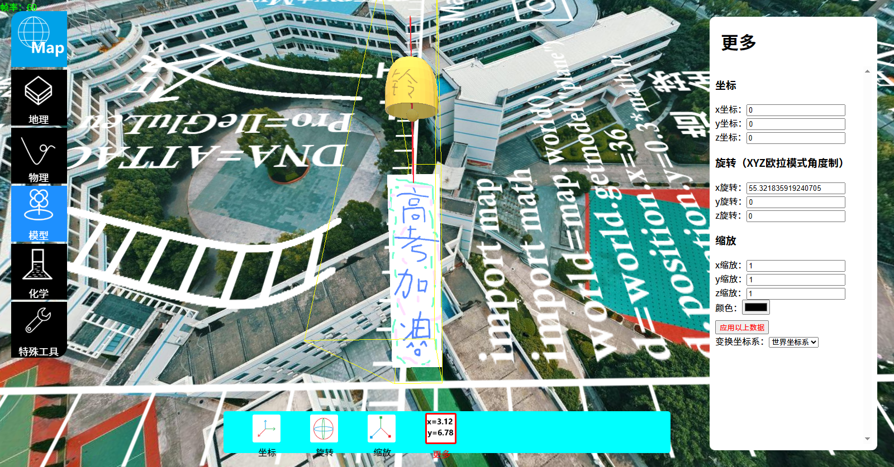

MapEditor，专业元宇宙地图编辑器即将上市，简单操作便捷。只需要搭积木的编程，能编辑蛋白质，核酸，音乐，模型，地图，天空盒，门电路，视频，游戏，特效，Excel，电路，图中图，功能性模型，函数库
使用Javascript和Python和Threejs搭建，简单操作，功能分为三大学科两大模型，地理物理化学模型特殊工具，只要会就能轻松上手，不用担心不会做
由SaSa讲知识团队亲手开发，全部中文版，使用自研物理引擎化学引擎地理引擎。
预计明年9月上市（7.0版本因为是小说自然馆里写的7.0在明年1月16日上市，按照此版本开发）
